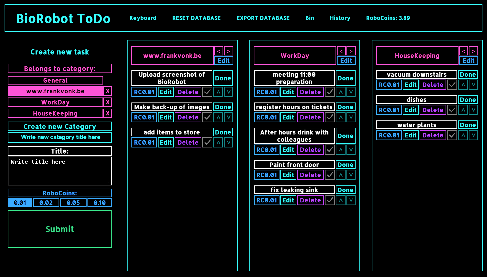
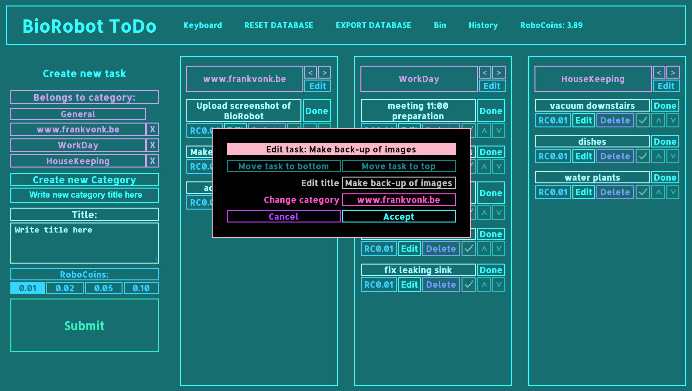
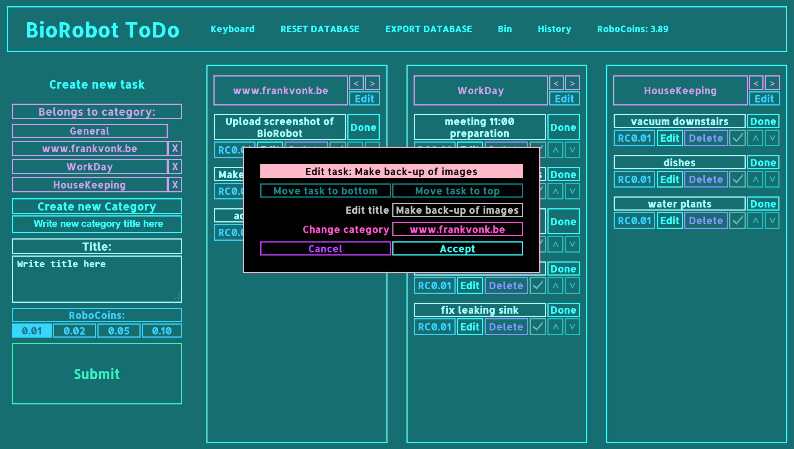

"BioRobot ToDo"
January 2021
A Handy TODO system.
I like turning complicated tasks in to simple subtasks. And for my household, I have a million small things to do.
As both my memory is not perfect anymore, and i'm kind of a procrastinator, it's easy to forget small things.
So, this system helps me in both dividing large endeavours in small manageable parts, and to keep small tedeous from the back of my mind on the agenda.

Both the task, and the category it belongs to have an Edit button to let you rename or move it.

A task that is done will end up in the "History" area at the top of the screen where you can either restore it in case you hit "Done" accidentally, or you can permanently delete it from there.
A task that is deleted ends up in the "Bin" on the top area of the screen. Just like a task that was marked "Done", you can also open the bin to restore or permanently delete a task.
There is a checkbox in each task that is only there for visual marking what you have already done. It does not actually do anything behind the scenes.
Every action you perform on this app, be it the creation of a new category or task, something deleted or moved sideways, a checkbox that is marked, etc. is stored in memory. No need to use a "Save" button (So it does not even exist).
Shut down the browser or your PC and the data will be the same the next time you visit the app.
Privacy of your data:
There is no back-end code that sends your tasks to a server or anything like that. This is just a simple HTML file with JavaScript code that takes input from the text fields, and stores the data in the form of a cookie on your browser. The data does not leave your computer at anytime. Please feel free to take a glance at the code by saving the HTML file and reading the code for yourself. I have put all the CSS/HTML/JavaScript in a single HTML file for your convenience.
(Please note that this is part of a multitude of apps that i have created for personal use. therefore the code is not compacted.)
Both the task, and the category it belongs to have an Edit button to let you rename or move it.

- First step is to select an existing category on the left. (or create a new one using the "Create new Category" Button).
- Then write a title / description for the task in the "Write title here" field
- Smash that "Submit button!"
A task that is done will end up in the "History" area at the top of the screen where you can either restore it in case you hit "Done" accidentally, or you can permanently delete it from there.
A task that is deleted ends up in the "Bin" on the top area of the screen. Just like a task that was marked "Done", you can also open the bin to restore or permanently delete a task.
There is a checkbox in each task that is only there for visual marking what you have already done. It does not actually do anything behind the scenes.
Every action you perform on this app, be it the creation of a new category or task, something deleted or moved sideways, a checkbox that is marked, etc. is stored in memory. No need to use a "Save" button (So it does not even exist).
Shut down the browser or your PC and the data will be the same the next time you visit the app.
Privacy of your data:
There is no back-end code that sends your tasks to a server or anything like that. This is just a simple HTML file with JavaScript code that takes input from the text fields, and stores the data in the form of a cookie on your browser. The data does not leave your computer at anytime. Please feel free to take a glance at the code by saving the HTML file and reading the code for yourself. I have put all the CSS/HTML/JavaScript in a single HTML file for your convenience.
(Please note that this is part of a multitude of apps that i have created for personal use. therefore the code is not compacted.)
Be my guest and use it by clicking on THIS link.
HTML/JavaScript.